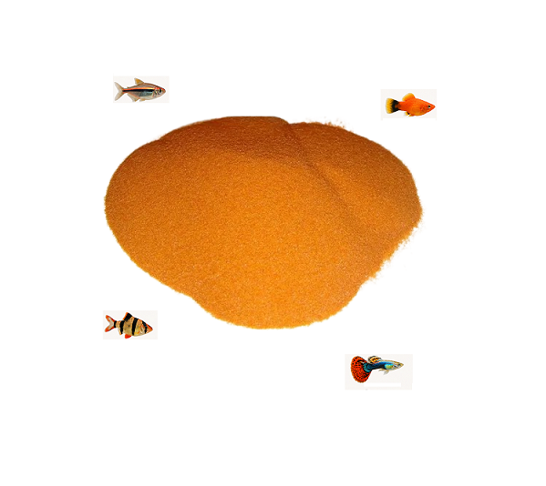

Ração para alevinos, guppy, lebistes e peixes ornamentais pequenos

A ração para alevinos é um alimento completo e altamente nutritivo, ideal para peixes ornamentais de pequeno porte como betta, guppy, lebistes e tetras. Com 52% de proteína, proporciona crescimento saudável e excelente desenvolvimento nas fases iniciais.
Com granulometria fina de 0,4 mm e fórmula à base de vegetais, leguminosos e proteína de peixe, garante alta digestibilidade, ótima aceitação e suporte completo para o fortalecimento e vitalidade dos peixes.
Benefícios
- 52% de proteína de alta qualidade
- Granulometria fina (0,4 mm)
- Ideal para fases iniciais
- Auxilia no crescimento saudável
- Alta digestibilidade
- Excelente aceitação
Espécies Indicadas
- Alevinos
- Betta
- Guppy / Lebiste
- Poecilídeos
- Tetras
- Rasboras
- Killifish
- Outros peixes ornamentais pequenos
Mix Campo, ração Mix Campo, produtos Mix Campo, alimentação para peixes Mix Campo